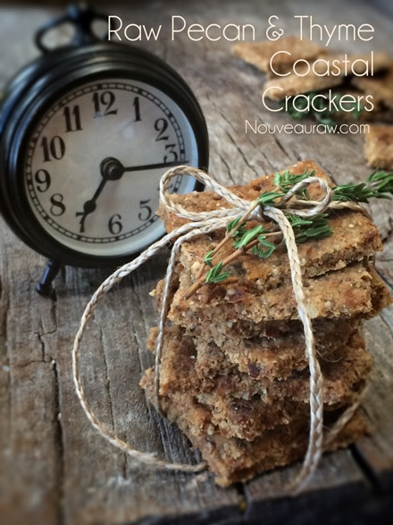
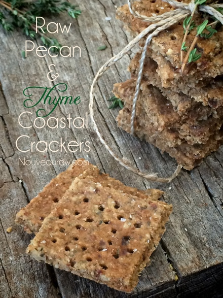
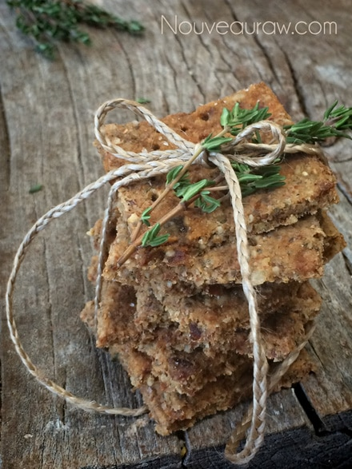

Thyme and Pecan Coastal Crackers

~ raw, vegan, gluten-free ~
I have been creating a series of what I call, Coastal Crackers and I am falling head over heels for each one. They are very sturdy crackers that really hold their own. Meaning, we enjoy them as is… no cheese, no spreads, no noffin’! That isn’t to say that they won’t pair well with those things… they are just amazing all by themselves.
My suggestion would be to use fresh thyme in these crackers. There is just something special about using fresh herbs. The flavor is so much more vibrant. Thyme is also rich in nutrients, now I realize that we are not going to be eating therapeutic amounts of thyme in these crackers, but the more we add healthier ingredients to our foods, the better. :)
“It is rich in Vitamin A that is a fat-soluble vitamin and an antioxidant essential for healthy mucus membranes and skin, thyme promotes healthy vision. Thyme also contains antiseptic and antibiotic properties that make it a great remedy when you have a cold, cough or a sore throat. According to a study, the herb is known to treat bronchitis and coughs. A cup of thyme tea is recommended for those with cold.” (source).
But let’s talk more about this cracker. As I mentioned above, it is a very hardy cracker. The savoriness… ooooh the savoriness (I hope that is a word) is just delightful when pairing the richness of the pecans with the freshness of the thyme. Then to top it off, literally, I sprinkled a coarse finishing salt on top. This is an easy way to elevate your food experience… a true flavor enhancer.
The concept of finishing salt is exactly what it sounds like… you get a good pinch of your carefully chosen salt and fling it across the surface of your food, and take a bite. The experience is strong at first but tapers with each chew. Let me see if I can describe it well enough.
As you eat, the food and salt combine but you first get a flash of salt, then along comes a hint of flavor from the food. You chew again and then get a flicker of salt and but now the flavors of food get stronger. See the pattern so far? And then lastly a faint spark of salt catches at the richest and most complex flavors of the food. With finishing salt, the relationship of salt and food evolves with every bite. The rewards are increased intensity of flavor, greater flavor complexity, exciting new textures and even aromas, and a heightened awareness of the very process of tasting food. If you doubt this, I invite you to experiment for yourself.
Yields 50
Cracker base:
Almond milk sludge:
- 1 1/4 cups water
- 3/4 cup raw almonds, soaked
Preparation:
- In the food processor, fitted with the “S” blade, pulse together the pecans, sunflower seeds, chia seeds, flax, pepper and celery salt.
- Add the almond pulp, almond milk sludge, vinegar, sweetener (of choice) and thyme. Process into a thick batter that is almost paste-like.
- Add the diced dates and pulse together.
- Divide in half and spread out on two teflex sheets that come with the dehydrator. Spread to about 1/4″ thick. Square of the edges and score into preferred shapes and sizes.
- Optional but I did this… I took a meat tenderizer and stamped each cracker square.
- Add a coarse finishing salt on top.
- Dehydrate at 145 degrees (F) for 1 hour, then reduce to 115 degrees for up to 16 hours or until dry. Keep in mind that once they cool, they crisp up some. So it a good idea to pull a cracker out every once in a while and let it cool to room temp to test it for doneness.
- Store in airtight container on the counter for 5-7 days or in the freezer for 1-2 months.
Culinary Explanations:
- Why do I start the dehydrator at 145 degrees (F)? Click (here) to learn the reason behind this.
- When working with fresh ingredients it is important to taste test as you build a recipe. Learn why (here).
- Don’t own a dehydrator? Learn how to use your oven (here). I do however truly believe that it is a worthwhile investment. Click (here) to learn what I use.


© AmieSue.com